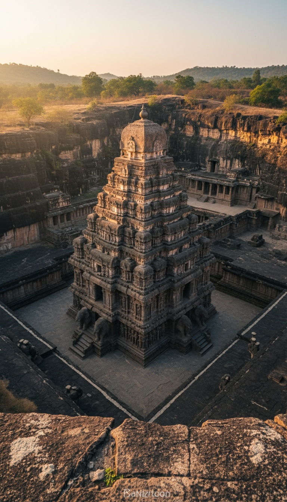

In western India there is a temple that was not built. It was carved, downward, out of a single mountain of solid basalt, and the mountain that used to be there is gone.
Kailasa Temple, Cave 16 at the Ellora Caves in Sambhaji Nagar district, Maharashtra, is the only structure of its size on Earth that was made by subtraction. Not stacking. Not assembly. Deletion.

The Receipts on What This Actually Is
Kailasa Temple sits inside the Ellora Caves complex in Maharashtra, India, along a two-kilometer basalt cliff that holds 34 rock-cut Hindu, Buddhist, and Jain monuments.
The temple rises 32.6 meters (107 feet) above the courtyard floor, making it taller than the Parthenon in Athens and covering roughly twice the footprint. UNESCO inscribed the entire Ellora site as a World Heritage property in 1983.
Every wall, every pillar, every staircase, every elephant carving, and the shikhara tower itself is one continuous piece of basalt. There are no joints. There is no mortar. There are no seams because there are no pieces.
The Rashtrakuta Attribution and Its Gaps
Mainstream scholarship attributes the excavation to Rashtrakuta king Krishna I, who ruled roughly 756 to 773 CE. The attribution rests on two epigraphs, not on any inscription inside the temple itself.
The first is the Vadodara copper-plate inscription of Karkaraja II, dated around 812 to 813 CE, which credits a "Krishnaraja" with a temple at Elapura so wondrous that even the gods and the architect were astonished. The second is an Old Kannada inscription found at Kadaba hobli in Gubbi district, which similarly names Krishnaraja.
Neither inscription is physically attached to the temple. Neither dates Krishna I's reign directly. There is no foundation stone, no builder's dedication, no architect signature, no plan, and no timeline carved into any of the three stories of the monument itself.
Top-Down Carving Means Zero Margin
Here is what separates Kailasa from the other 33 caves at Ellora. They were tunneled horizontally into the cliff face, the normal way rock-cut architecture works globally.
Kailasa was started at the top. Workers cut a U-shaped trench down through the cliff first, isolating a freestanding block of basalt roughly 60 meters long and 33 meters tall. Then they carved that block inward and downward into a three-story temple with courtyards, sub-shrines, and life-sized elephants.
Top-down carving eliminates iteration. You cannot prototype. You cannot test a design on a spare corner. Every strike on a pillar three floors down was committed the moment the chisel moved, because the roof above it was already finished and load-bearing.
They did not build a temple. They deleted a mountain around one, and the mountain has never been located.
The Missing Debris Problem
Estimates for the removed rock volume range from 200,000 to 400,000 tons of solid basalt. The upper figure is heavier than the steel and concrete mass of the Empire State Building.
Basalt does not vanish. It does not compress. It does not dissolve in monsoon rain over twelve centuries. Removed basalt becomes gravel, rubble, and boulders that have to go somewhere within cart-hauling distance of an 8th-century worksite.
No quarry dump matching Kailasa's output has been identified in the Ellora vicinity. There is no debris field, no fill zone, no engineered berm, no rubble mound catalogued by the Archaeological Survey of India that accounts for the missing mass. The rock left the site and the trail ended.
Why the Other 33 Caves Do Not Help
Ellora's cave complex was worked from roughly the 6th through 10th centuries CE by three religious traditions in parallel. The technique everywhere else is horizontal tunneling. You cut a doorway, hollow out a room, and haul rubble out the entrance.
That method leaves predictable spoil piles, and archaeologists have mapped them across the site. The other 33 caves behave like archaeology should behave. There is stone in, stone out, and the ledger balances.
Kailasa breaks the ledger. It is the only top-down monolith in a complex that otherwise obeys the physics of rubble, and it is the only one no modern engineering firm has volunteered to reproduce at scale. Not with tourist funding. Not with laser guidance. Not with a permit.
What the Silence Actually Says
Ancient Indian temple construction is heavily documented. The Vastu Shastra tradition, the Mayamata, and the Manasara all describe temple layout, proportion, ritual, and stone selection in obsessive detail.
Nothing in the surviving Sanskrit architectural corpus describes how to carve a 400,000-ton monolith from the top down without a failure. The technique is not in the manuals because the manuals do not admit the technique exists.
The Rashtrakuta dynasty produced court poetry, land grants, and copper-plate charters throughout the 8th and 9th centuries. None of them contains a construction log for Kailasa. The king who supposedly commissioned the largest single-rock monument on Earth left no receipt for the labor.
The debris field is missing. The construction plans are missing. The inscription inside the temple is missing. The method itself, top-down monolithic subtraction at this scale, has never been reproduced anywhere else in the ancient or modern world.
What remains is a 32-meter negative space carved into a Maharashtra cliff by people who apparently only needed one attempt, and a hole in the historical record exactly the shape of the mountain that used to be there. Tell me where the rock went.
Before you go
7 books the Vatican doesn't want you reading. Free PDF — the texts they cut, with sources. Joined by 140+ Inner Circle members.
No spam. Unsubscribe anytime.
Go deeper
The Hidden Canon, Vol. I — Enoch. Jubilees. Thomas. Mary. Judas. 90 pages, 14 chapters, every receipt cited. The books your Bible quietly removed.
Read the Canon →Books that informed this investigation
As an Amazon Associate, Hidden Epoch earns from qualifying purchases. Cost to you: nothing.
Research safely
The VPN we use to research without being tracked. First 3 months free.
Get NordVPN →